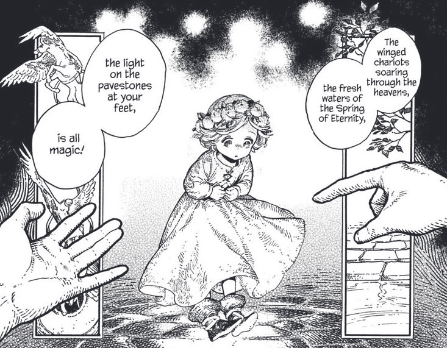
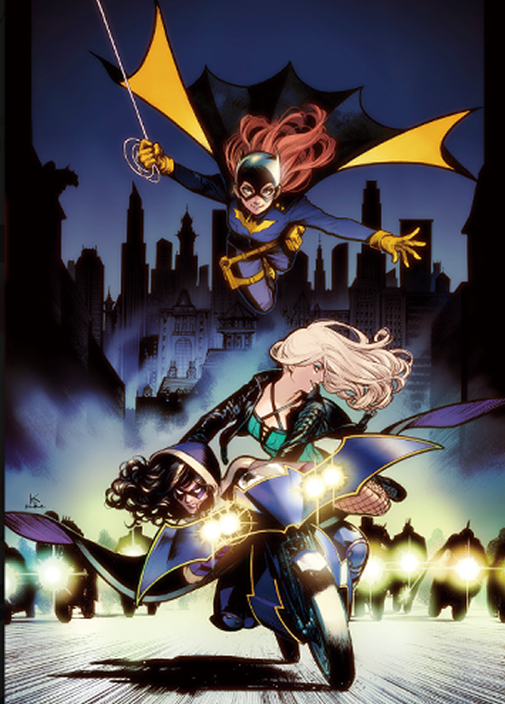

She is a Japanese freelance manga artist and illustrator. She is best known for her Witch Hat Atelier series, but she also wrote other mangas. The first one was a short story called "Watashi no Kuro-chan" or "My Little Noir". She also wrote another manga series titled "Enidevi" As an illustrator, she has created variant covers and other illustrations for Marvel Comics, DC Comics, and stories in the Star Wars franchise. She also supervises a spin-off of Atelier, titled Kitchen of Witch Hat and drawn by Hiromi Satô.
She is mostly active on twitter, where she shares fanarts and pictures of her dogs. :3
Coco dreams of being a witch, but in her world only those born with magical abilities are able to become witches. However, after meeting a witch named Qifrey, it seems like there may be hope for Coco after all.
What is atelier of witch hat about?
Are athletes athletes from the moment they're born? What about astronauts or idols? These things aren't decided at birth. So then… What about witches? In a world where everyone takes wonders like magic spells and dragons for granted, Coco is a girl with a simple dream: she wants to be a sorceress.
However, everyone knows that witches are born, not made, and Coco he was not born with the gift of magic. For this reason, Coco had given up on her dream... until, one fine day, the magician Qifrey visited her mother's workshop. Then she manages to spy on him as he is about to cast a spell and... Despair turns to hope in this tale about a girl who dreams of becoming a sorceress!
Coco sees her wish fulfilled at the horrid cost of her mother getting turned to stone. Subsequently, she is taken in by Qifrey and, instead of having her memory erased, is allowed to learn the ways of rune magic, which gains her a dubious reputation in the magic community. While initially clumsy and naive, she is very enthusiastic about learning all she can about magic.

Manga Preview

Qifrey's Atelier
Qifrey - the professor
Qifrey (キーフリー) runs an atelier and currently has four apprentices. He is a former apprentice of Beldaruit. Qifrey is a caring and patient teacher who understands the individuality of his students. This is especially true for Coco , who has no special abilities as a witch at first, but he continues to encourage her until she can draw magic skillfully. He is protective of all his disciples, as seen from how he protects them from being taken by Easthies and the Knights Moralis.
Qifrey hates water and getting wet, stating that the reason he became so skilled with water magic was because he wanted to avoid getting wet by controlling the water with spells.
Olruggio - the Watchful Eye
Olruggio (オルーギオ) is a witch specializing in fire magic who serves as the Watchful Eye for Qifrey's atelier. He has a gruff way of speaking but his magic is often described as "warm." He has created a lot of magical items, such as the Glowstone Path, the Snugstone and the Searneedle Wand.
Qifrey and Olruggio are childhood friends , and seem to trust each other dearly. Despite being the Atelier's Watchful Eye and being sworn to report wrongdoings to the Knights Moralis, Olruggio trusts Qifrey to the point where he breaks this oath multiple times— like when he doesn't take Coco away after discovering she was an outsider to witch society.

Witch Apprentices
Coco
Coco (ココ) is the protagonist of Witch Hat Atelier. She is a young girl who becomes an apprentice witch under the witch Qifrey's tutelage following her initial accidental use of forbidden magic which turned her mother to crystal.
Agott
Agott (アガット) is one of Qifrey's apprentice. She belongs to the famous Arkrome houses. She hopes to develop her skills enough to become a librarian at the Tower of Tomes like her ancestors and prove herself worthy.
Riche
Riche (リチェ) is a young apprentice witch and a disciple of Qifrey. Riche has a seemingly emotionless and childish personality, being very stubborn, individualistic, and resentful of authority figures that tell her what to do.
Tetia
Tetia (テティア) is a young apprentice witch at Qifrey's Atelier. She loves the idea of clouds and dreams of creating the perfect cloud magic. Tetia is an extremely upbeat, loving girl that tries to help everyone and loves it when people thank her.
Anime Project Teaser!
On 2021, it was announced that Witch Hat Atelier will be receiving an anime adaptation somewhere in the future
Shirahama kamome: mangaka and comic artist
